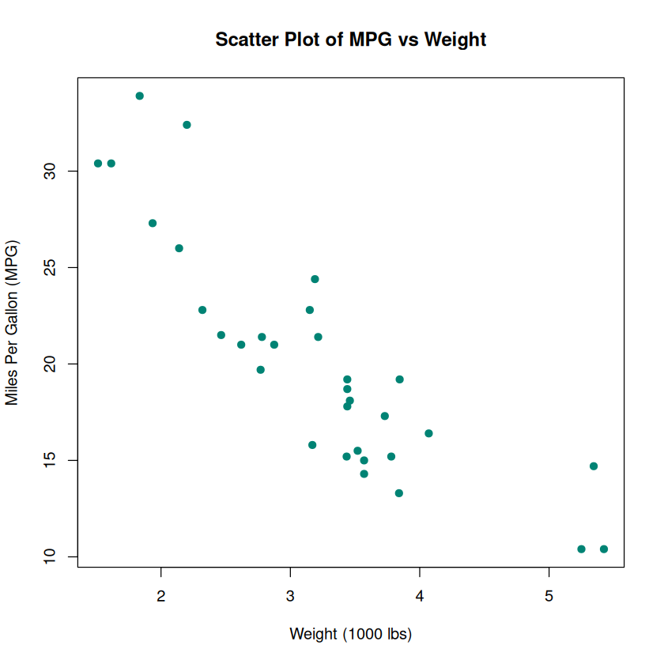
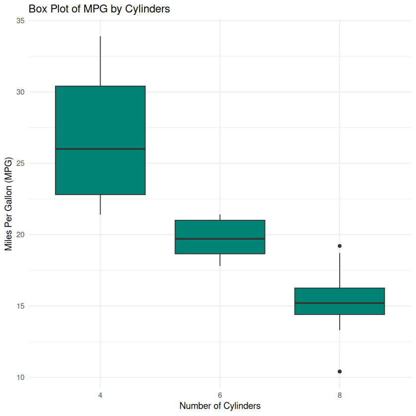

In this tutorial, we’ll explore how to create basic graphs using both base R and the ggplot2 package
Author
Juma Shafara
Published
September 9, 2024
Data Visualization Crash Course
Data visualization is a crucial aspect of data analysis, allowing you to understand patterns, trends, and insights effectively. R, with its rich ecosystem of packages, offers powerful tools for creating a wide variety of visualizations. In this tutorial, we’ll explore how to create basic graphs using both base R and the ggplot2 package, one of the most popular visualization libraries in R.
Before we continue, I have a humble request, to be among the first to hear about future updates of the course materials, simply enter your email below, follow us on (formally Twitter), or subscribe to our YouTube channel.
1. Getting Started
Before diving into data visualization, ensure you have R and a code editor or IDE like RStudio or Visual Studio Code installed on your computer.
For demonstration purposes, we’ll use the built-in mtcars dataset, which contains data about various car models.
# Load the datasetdata(mtcars)# View the first few rowshead(mtcars)
A data.frame: 6 × 11
mpg
cyl
disp
hp
drat
wt
qsec
vs
am
gear
carb
<dbl>
<dbl>
<dbl>
<dbl>
<dbl>
<dbl>
<dbl>
<dbl>
<dbl>
<dbl>
<dbl>
Mazda RX4
21.0
6
160
110
3.90
2.620
16.46
0
1
4
4
Mazda RX4 Wag
21.0
6
160
110
3.90
2.875
17.02
0
1
4
4
Datsun 710
22.8
4
108
93
3.85
2.320
18.61
1
1
4
1
Hornet 4 Drive
21.4
6
258
110
3.08
3.215
19.44
1
0
3
1
Hornet Sportabout
18.7
8
360
175
3.15
3.440
17.02
0
0
3
2
Valiant
18.1
6
225
105
2.76
3.460
20.22
1
0
3
1
3. Installing and Loading Necessary Packages
While base R offers basic plotting capabilities, ggplot2 provides a more flexible and powerful system for creating complex plots.
# Install ggplot2 if you haven't alreadyinstall.packages("ggplot2")# Load ggplot2library(ggplot2)
Installing package into ‘/home/jumashafara/R/x86_64-pc-linux-gnu-library/4.3’
(as ‘lib’ is unspecified)
4. Basic Graphs in Base R
Scatter Plot
Purpose: To visualize the relationship between two continuous variables.
# Scatter plot of mpg vs. wtplot(mtcars$wt, mtcars$mpg,main ="Scatter Plot of MPG vs Weight",xlab ="Weight (1000 lbs)",ylab ="Miles Per Gallon (MPG)",pch =19, # Solid circlescol ="#008374")

Explanation: - plot(x, y): Creates a scatter plot with x on the horizontal axis and y on the vertical axis. - main: Title of the plot. - xlab and ylab: Labels for the x and y axes. - pch: Plotting symbol (19 is a solid circle). - col: Color of the points.
Bar Chart
Purpose: To compare categorical data.
# Bar chart of the number of cars by number of cylinderscyl_counts <-table(mtcars$cyl)barplot(cyl_counts,main ="Number of Cars by Cylinders",xlab ="Number of Cylinders",ylab ="Frequency",col ="#008374")
Explanation: - table(): Creates a frequency table of the categorical variable. - barplot(): Generates a bar chart from the frequency table.
Histogram
Purpose: To display the distribution of a continuous variable.
# Histogram of MPGhist(mtcars$mpg,main ="Histogram of MPG",xlab ="Miles Per Gallon (MPG)",col ="#66fdee",border ="#008374")
Explanation: - hist(): Creates a histogram. - col: Fill color of the bars. - border: Color of the bar borders.
Box Plot
Purpose: To show the distribution of a continuous variable and identify outliers.
# Box plot of MPG by number of cylindersboxplot(mpg ~ cyl, data = mtcars,main ="Box Plot of MPG by Cylinders",xlab ="Number of Cylinders",ylab ="Miles Per Gallon (MPG)",col ="#66fdee")
Explanation: - boxplot(y ~ x, data): Creates a box plot of y grouped by x.
Line Graph
Purpose: To display trends over time or ordered categories.
# Line graph of MPG for each car (ordered by weight)mtcars_ordered <- mtcars[order(mtcars$wt), ]plot(mtcars_ordered$wt, mtcars_ordered$mpg,type ="o", # Both lines and pointsmain ="Line Graph of MPG vs Weight",xlab ="Weight (1000 lbs)",ylab ="Miles Per Gallon (MPG)",col ="purple")
Explanation: - type = "o": Overplotted points and lines. - Ordering the data can make the line graph more meaningful.
5. Basic Graphs with ggplot2
ggplot2 follows the Grammar of Graphics, allowing for a more structured and layered approach to building plots.
Scatter Plot
# Scatter plot of mpg vs wt using ggplot2ggplot(mtcars, aes(x = wt, y = mpg)) +geom_point(color ="#008374", size =3) +ggtitle("Scatter Plot of MPG vs Weight") +xlab("Weight (1000 lbs)") +ylab("Miles Per Gallon (MPG)") +theme_minimal()
Explanation: - ggplot(data, aes()): Initializes the plot with data and aesthetic mappings. - geom_point(): Adds points to the plot. - ggtitle(), xlab(), ylab(): Add title and axis labels. - theme_minimal(): Applies a minimal theme to the plot.
Bar Chart
# Bar chart of the number of cars by cylinders using ggplot2ggplot(mtcars, aes(x =factor(cyl))) +geom_bar(fill ="#00fdee") +ggtitle("Number of Cars by Cylinders") +xlab("Number of Cylinders") +ylab("Frequency") +theme_minimal()
Explanation: - aes(x = factor(cyl)): Treats cyl as a categorical variable. - geom_bar(): Automatically counts the number of occurrences for each category.
Histogram
# Histogram of MPG using ggplot2ggplot(mtcars, aes(x = mpg)) +geom_histogram(binwidth =2, fill ="#66fdee", color ="#008374") +ggtitle("Histogram of MPG") +xlab("Miles Per Gallon (MPG)") +ylab("Frequency") +theme_minimal()
Explanation: - geom_histogram(): Creates a histogram. - binwidth: Sets the width of each bin.
Box Plot
# Box plot of MPG by cylinders using ggplot2ggplot(mtcars, aes(x =factor(cyl), y = mpg)) +geom_boxplot(fill ="#008374") +ggtitle("Box Plot of MPG by Cylinders") +xlab("Number of Cylinders") +ylab("Miles Per Gallon (MPG)") +theme_minimal()

Explanation: - geom_boxplot(): Creates a box plot.
Line Graph
# Line graph of MPG vs Weight using ggplot2ggplot(mtcars_ordered, aes(x = wt, y = mpg)) +geom_line(color ="#008374") +geom_point(color ="#66fdee", size =2) +ggtitle("Line Graph of MPG vs Weight") +xlab("Weight (1000 lbs)") +ylab("Miles Per Gallon (MPG)") +theme_minimal()
Customization enhances the readability and aesthetics of your plots. Here are some common customizations:
Changing Themes
ggplot2 offers several themes to change the overall look of the plot.
ggplot(mtcars, aes(x = wt, y = mpg)) +geom_point(color ="#008374") +ggtitle("Scatter Plot of MPG vs Weight") +xlab("Weight (1000 lbs)") +ylab("Miles Per Gallon (MPG)") +theme_bw() # Changes to a black and white theme
Other themes: - theme_minimal() - theme_classic() - theme_dark()
Adding Colors and Fill
You can map variables to colors for more informative plots.
# Scatter plot with color based on number of cylindersggplot(mtcars, aes(x = wt, y = mpg, color =factor(cyl))) +geom_point(size=3) +ggtitle("Scatter Plot of MPG vs Weight by Cylinders") +xlab("Weight (1000 lbs)") +ylab("Miles Per Gallon (MPG)") +theme_minimal() +scale_color_manual(values =c("#909090", "#66fdee", "#008374"),name ="Cylinders")
Explanation: - color = factor(cyl): Colors points based on the number of cylinders. - scale_color_manual(): Manually sets the colors and legend title.
Faceting
Faceting allows you to create multiple plots based on a categorical variable.
# Scatter plot faceted by number of cylindersggplot(mtcars, aes(x = wt, y = mpg)) +geom_point(color ="#008374", size=3) +ggtitle("Scatter Plot of MPG vs Weight by Cylinders") +xlab("Weight (1000 lbs)") +ylab("Miles Per Gallon (MPG)") +theme_minimal() +facet_wrap(~ cyl)
Explanation: - facet_wrap(~ cyl): Creates a separate plot for each level of cyl.
Adding Labels and Annotations
You can add text labels or annotations to highlight specific points.
# Scatter plot with labels for cars with highest MPGtop_mpg <- mtcars[mtcars$mpg >30, ]ggplot(mtcars, aes(x = wt, y = mpg)) +geom_point(color ="#008374") +geom_text(data = top_mpg, aes(label =rownames(top_mpg)),vjust =-1, size =3) +ggtitle("Scatter Plot of MPG vs Weight with Labels") +xlab("Weight (1000 lbs)") +ylab("Miles Per Gallon (MPG)") +theme_minimal()
Explanation: - geom_text(): Adds text labels to specific points. - vjust: Vertical adjustment of text position.
7. Saving Your Plots
After creating your plot, you might want to save it to a file.
Saving Base R Plots
# Save scatter plot as PNGpng("scatter_mpg_wt.png", width =800, height =600)plot(mtcars$wt, mtcars$mpg,main ="Scatter Plot of MPG vs Weight",xlab ="Weight (1000 lbs)",ylab ="Miles Per Gallon (MPG)",pch =19,col ="blue")dev.off()
png: 2
Saving ggplot2 Plots
# Create the plotp <-ggplot(mtcars, aes(x = wt, y = mpg)) +geom_point(color ="blue", size =3) +ggtitle("Scatter Plot of MPG vs Weight") +xlab("Weight (1000 lbs)") +ylab("Miles Per Gallon (MPG)") +theme_minimal()# Save the plotggsave("ggplot_scatter_mpg_wt.png", plot = p, width =8, height =6, dpi =300)
Explanation: - ggsave(): Saves the last plot or a specified plot to a file. - width, height: Size of the saved plot in inches. - dpi: Resolution of the saved plot.
8. Conclusion
In this tutorial, we’ve covered the basics of data visualization in R using both base R and ggplot2. Here’s a quick recap:
Base R provides straightforward functions for creating basic plots quickly.
ggplot2 offers a more flexible and powerful approach, enabling complex and highly customizable visualizations.
Customizing your plots enhances clarity and aesthetics, making your data more interpretable.
Saving your plots allows you to include them in reports, presentations, or share them with others.
Next Steps
Explore Advanced ggplot2 Features: Learn about facets, themes, and more geoms.
Interactive Visualizations: Consider packages like plotly or shiny for interactive plots.
Data Manipulation: Use dplyr and tidyr to prepare your data for visualization.
Practice: Apply these techniques to your own datasets to reinforce your learning.